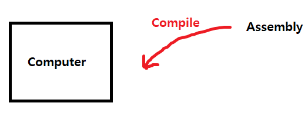
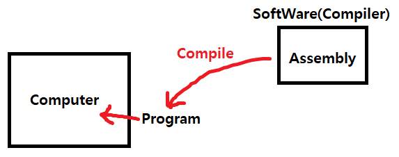

원래 C# 이란 공부를 언제 할 것인가 계획을 잡았었습니다.
하지만 계획의 이전 단계
"자료구조라도 끝내고 시작하자"
제가 정한 일부분의 계획이었는데 지키지 못했네요.
아마 이건 제 의지가 부족한것도 있으며 머리가 좋지 않은것도 한 몫했을 겁니다.
그래도 그냥 한번 부딪혀보려고 합니다. 가만히 있는 거보다는 무엇이라도 하는 게 좋지 않겠습니까
이 글을 봐주시는 분이 얼마나 될지는 모르겠지만. 차례대로 차근차근
같이 공부가 됐으면 합니다.
저는 C# 의 공부를 "이것이 C#이다" 라는 책을 보면서 할 생각이며, 이 문서도 책의 기반이 될것같습니다.
프로그래밍
항상 프로그래밍책을 보게 되면 프로그래밍의 역사부터 알려주는데
다시 봐도 처음보는 내용같습니다.
뭐 실제로 프로그래밍의 역사를 안다고해서 프로그래밍을 더 잘하는건 아니니깐요.
단지 프로그래밍이라는 배경과 프로그래밍의 존재 목적만 알면 된다고 생각합니다.
컴퓨터는 명령을 통해서 움직입니다. 그리고 이 명령을 내리기 위해서는 기계어로 전달을 해줘야 하죠.
하지만 이 기계어는 소수의 사람을 제외하고는 사용을 할 수 없었죠.
그 만큼 어려웠고 우리가 알던 언어와의 개념과는 많이 다르니깐요.
그래서 이 기계어를 사람이 쉽게 이해 할 수 있도록 프로그래밍 언어라는게 탄생하게 됐습니다.
그 시작은
어셈블리어(Assembly)
이 프로그래밍 언어라는건 단지 언어이며 컴퓨터는 실제로 이 언어를 이해 하지 못합니다.
그래서 프로그래밍 언어를 기계어로 변환하는 작업을
컴파일(Compile)이라고 합니다.

어셈블리어로 코드를 작성 후 컴파일러(Compiler)라는 소프트웨어를 사용해 실행 파일로 만듭니다.
이 실행 파일을 프로그램(Program)이라 부르죠
현재 제일 알려진 소프트웨어는 당연 Visual Studio겠죠.
그 외 Dev C++과 같은 소프트웨어도 있고요.

C# 이란
C# 은 C++를 계승한다는 의미로 붙혀진 이름입니다.
하지만 실제로 C++의 코드를 C# 에 적용하진 못합니다.
단지 닷넷(.net)을 위한 언어라고 보면 되겠네요.
그렇다 해도 다른 언어들도 닷넷을 사용 할 수 있습니다.
그렇다면 C# 은 굳이? 닷넷을 위해 만들어진 이유가 없지 않나요?
파이썬이나 C++은 닷넷을 활용할 수 있지만
C# 만큼 닷넷을 사용하기에 효율적으론 사용을 하지 못합니다.
그 이유는 당연히 프로그래밍 언어의 목적이 다르니깐요.
C++은 객체 지향을 중점으로 만들어진 언어이며
C# 은 닷넷을 생각하고 만들어진 언어니깐요.